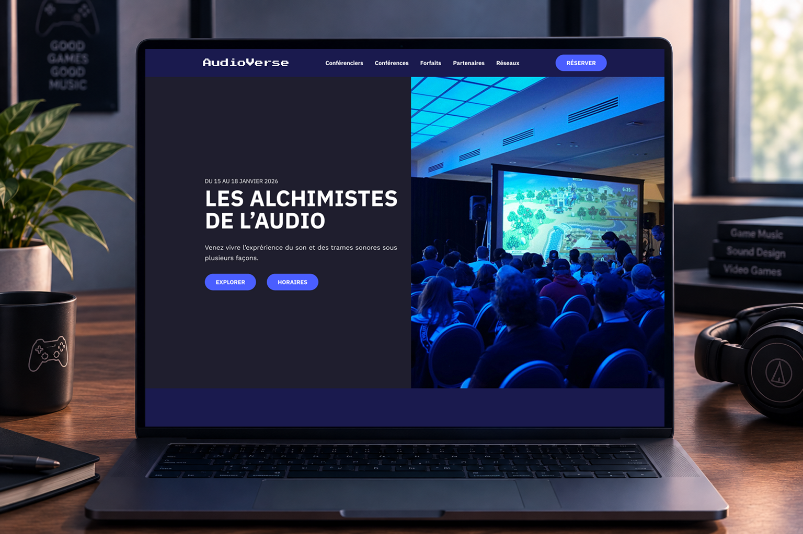
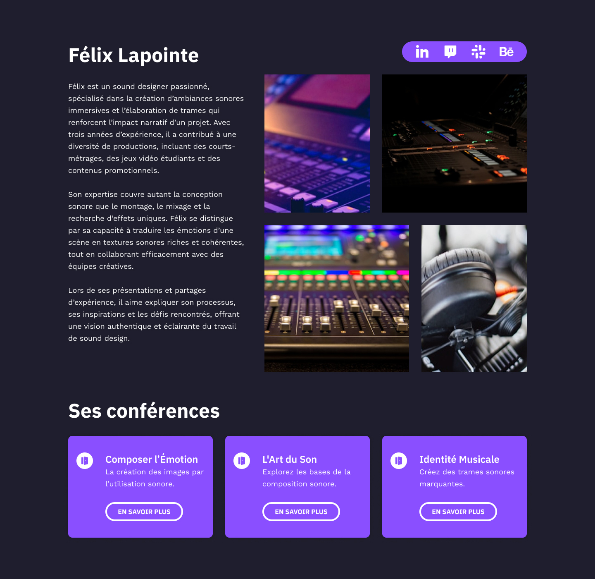
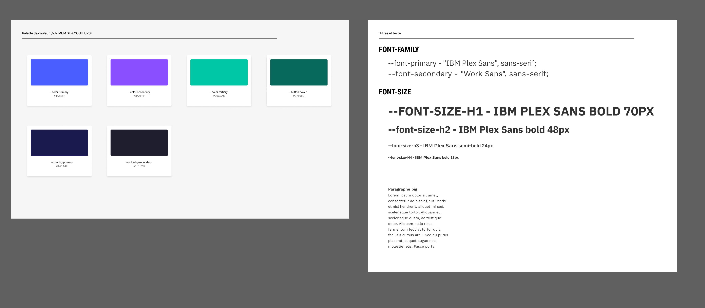
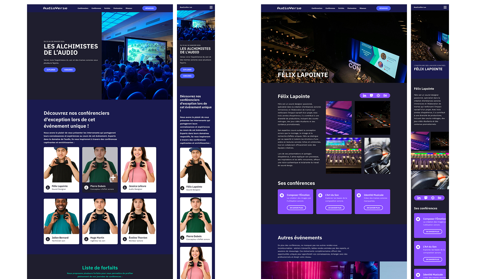
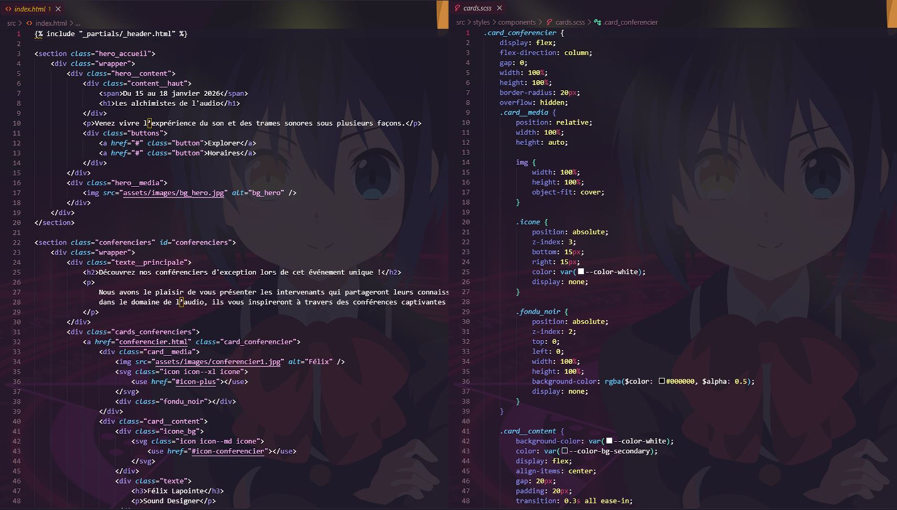
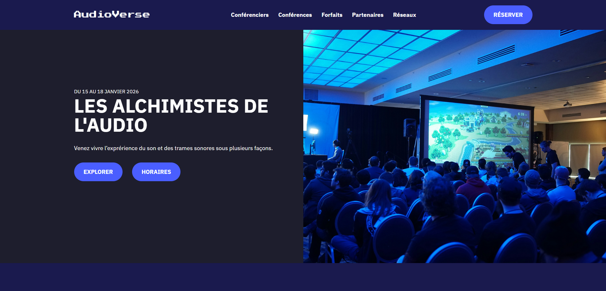

Pour ce projet scolaire, il fallait choisir une thématique de média à mettre en image pour des conférences. Moi, j’ai choisi l’audio. Donc, mon site de conférences et conférenciers se compose de sons et de trames sonores.
Aucune IA générative n’a été utilisée pour réaliser ce projet ni pour préparer sa fiche.

La description sur le conférencier

Je commence avec la création de mon site en choisissant une palette de couleurs impeccable ainsi de deux excellentes typographies qui seront utilisées dans mes maquettes.

J'ai conçu la maquette avec 2 différentes pages contenant différentes sections pour mon site web: la page d’accueil et la page du conférencier.

Suite à la maquette, je conçois avec du code HTML et CSS les pages du site tout en gardant une bonne organisation des sections et des classes que j’utilise pour le CSS.
Suite au CSS de base pour mon site, j’ai programmé des composantes et ajusté le responsive de mon site pour que ça fonctionne sur pour le mobile.

Maintenant que c’est tout finalisé, je peux survoler mon site sur un navigateur pour voir les conférenciers et les conférences fictifs qui sont offerts.